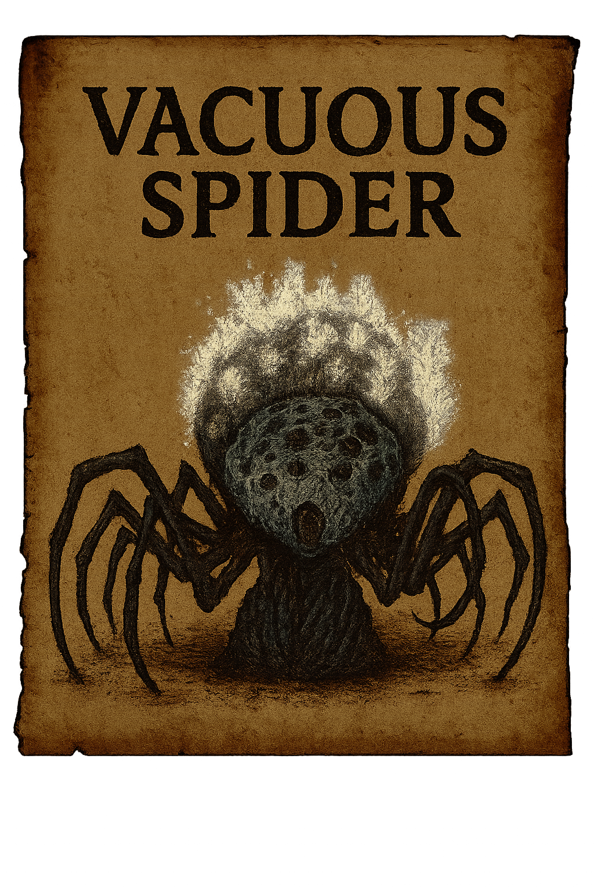

References
Insignia 06
Find more information about your Insignia, on your Insignias
PAGE 06 / 05 / 1894
Description
Rom, the Vacuous Spider, is a grotesque yet tragic Great One residing in the Moonside Lake of the Hunter's Nightmare. Appearing as a massive, pale arachnid with countless eyes and writhing legs, Rom maintains the illusion that shields Yharnam from the full horror of the Blood Moon. Despite its terrifying appearance, Rom is largely passive, floating inertly in its lunar lake while smaller spider minions defend it. Originally a scholar at Byrgenwerth, Rom was transformed through eldritch rituals into its current form, becoming a "vacuous" vessel of immense power but little will. Its very existence serves as a bulwark against the waking nightmare, though this protection comes at the cost of stalling humanity's evolution. When slain, the veil is lifted, and the Blood Moon descends upon Yharnam in earnest.
"The spider hides all manner of rituals, certain to reveal nothing, for true enlightenment need not be shared." — Provost Willem, Byrgenwerth
Clasification
- Class: Ascended Great One
- Threat Level: Reality-Anchor
- Contact Risk: Insight Overload / Arachnid Transformation
- Presence Detected:Moonside Lake, Byrgenwerth ruins, spider-infested nightmares
Scholar's Record – Archivist Micolash
"We thought Rom weak of mind, but perhaps it is we who are weak of eyes. The spider sees what we cannot - the truth that would shatter our fragile minds. Its vacuous nature is not a flaw, but a mercy. When I dreamt through its many eyes, I saw the cosmos writhing with unborn horrors. Rom's web holds back the tide, but for how long? The moon hangs low, and the spiders grow restless..."
Hunter Advisory
- Do not stare into Rom's eyes for extended periods - the eyes show the truth.
- If you begin seeing spiders in your peripheral vision, seek immediate cleansing.
- Arcane resistance is crucial when approaching the Moonside Lake.
- First sign of influence: crawling sensations when viewing the moon.
- Second sign: finding small, silken cocoons in your quarters.
Supplemental Notes
The Byrgenwerth records suggest Rom was once human, transformed through communion with the Eldritch Truth. Its "vacuous" state may represent a mind that has seen too much, retreating into simplicity to maintain sanity. The spiders surrounding Rom are believed to be failed attempts at ascension - scholars who sought enlightenment but became trapped in arachnid forms. Their endless skittering may be attempts to communicate forbidden knowledge in a language no human can comprehend.
Warning: This file has been compiled from fragmented lecture notes, mad scribblings, and the testimony of hunters who barely retained their sanity. Exposure may result in heightened Insight, arachnophobia, or worse - understanding.